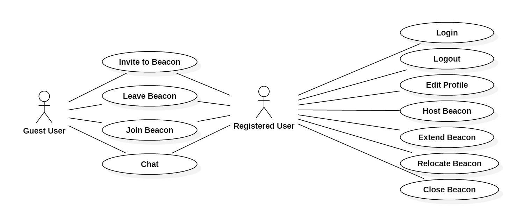

Study Space
Analysis Document
<<<<<<< HEAD
Version 0.0.1 - 06/18/2017
=======
Version 0.0.2 - 06/18/2017
>>>>>>> refs/remotes/origin/master
1. Introduction
Study Group Finder is a web-based application that allows students in any university to post and find study group locations. By doing so, students will be able to help each other achieve their academic goals as well as make new acquaintances.
2. Object Classification
2.1 Entity Objects
Host: a User that created a Beacon
User: a person that created an account with username and password
Guest: a person who does not own an account
Profile: a User’s profile they can edit
Beacon: a Beacon created by a Host that Users may join
ChatDB: a way for users to communicate through text
BeaconList: a list of Beacons
2.2 Boundry Objects
GuestLoginView: Where the guest can login and become a User or remain a Guest
GuestUserCreationView: Window where guest can create an account with email and password
GuestPageView: The page a Guest sees when entering website
UserPageView: The page a User would see upon login
BeaconCreationView: Where a User can create a Beacon by entering location and course code
then becomes a Host to that Beacon
BeaconFailedJoinView: window shown when joining beacon has failed
HostView: window that the Host can only see
HostBeaconControlView: beacon controls for the Beacons Host
BeaconChatWindowView: a Chat including all Users and Guests in that Beacon
FilterBeaconView: window where Users can filter Beacons through classes
BeaconListView: shows the BeaconList
ProfileWindow: Displays a Users profile
UserPrivateChatView: a Chat between two users
EditProfileView: a window where Users can edit their Profile
LogoutView: logout window for Users
2.3 Control Objects
JoinChat: controller to join a chat
SendMsg: coordinates sending a message
ChangeToHost: changes user to host
BackToSearch: redirects back to searchwindow after a failed search
DisplayResults: displays results of a search
JoinBeacon: coordinates joining a beacon
ApplySearchFilters: applies filters to beaconlist
LeaveChat: User leaves Chat
ProfileSearch: filters profiles by User
CreateBeacon: creates the beacon
ValidateBeacon: validates beacon creation
RelocateBeacon: allows Host to relocate a beacon
FailedCreation: notifies Host of failed beacon creation
CloseBeacon: allows Host to close the beacon
ExtendBeacon: allows Host to extend the time of their beacon
RegisterBeacon: Registers beacon to BeaconList
3. Diagrams
<<<<<<< HEAD
=======
Class Diagram
Robustness Diagrams


Sequence Diagrams


State Diagram

Use Case Diagram

5. Versions
Version 0.0.1 - 06/18/2017
HTML Document created
Version 0.0.2 - 06/18/2017
Diagrams Embedded as PNG, fixes and improvements
6. Authored By
- insert_name
- insert_name
- insert_name
- insert_name
>>>>>>> refs/remotes/origin/master